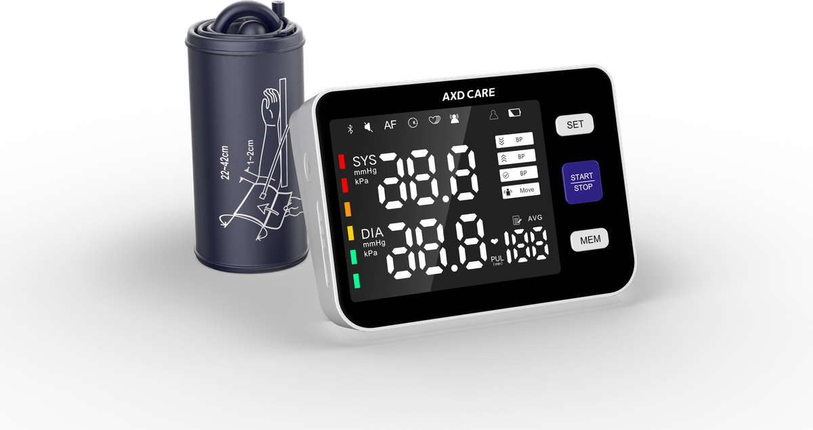

Buyer’s Guide
How to evaluate suppliers, compare OEM options and prepare RFQ information.
 Get a Quote
Get a QuotePractical B2B content for distributors, importers, pharmacy channels and private label healthcare brands sourcing home medical devices.
Request OEM Quote
Use the categories below to plan sourcing, compliance review, product comparison and market education.
How to evaluate suppliers, compare OEM options and prepare RFQ information.
Product selection, feature comparison and category education for B2B buyers.
CE, FDA, ISO13485 and documentation topics for target market planning.
Telehealth, homecare devices and global home healthcare market changes.
Factory updates, exhibition preparation and product program announcements.
Initial article cards for SEO, buyer education and sales enablement. Full articles can be expanded in the next phase.

Key checks for overseas buyers comparing factory capability, documentation, communication and OEM support.
Read More
What distributors should review before selecting upper arm, wrist or Bluetooth blood pressure monitor models.
Read More
A sourcing-focused comparison of portable mesh nebulizers and compressor nebulizers for pharmacy and distributor channels.
Read More
How to compare digital and infrared thermometer product lines, packaging needs and documentation requirements.
Read MoreLogo files, packaging requirements, target market information and volume plans that help shorten OEM project discussions.
Read MoreA practical explanation of quality management expectations and how buyers can request model-specific documentation.
Read More
Why certification availability may vary by model and market, and how to request the right files before placing orders.
Read More
How home monitoring, connected devices and pharmacy channels are shaping new procurement requirements.
Read MoreProduct, packaging and manual considerations when building a thermometer line for retail and healthcare channels.
Read More
How distributors can match nebulizer product type, packaging format and documentation to local channel needs.
Read More
Retail box, manual, barcode and shipping carton points to clarify before starting private label packaging work.
Read MoreQuestions to ask about sample review, production process, quality control, communication and long-term support.
Read More
How importers can combine monitoring, respiratory care, fever monitoring and medication management products.
Read More
How AXDCARE structures product visuals, specification sheets and packaging examples for exhibition follow-up.
Read MoreWhat brands should discuss when planning connected monitoring features, app support and private label packaging.
Read More